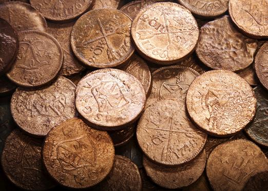
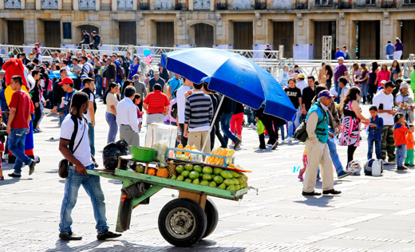

En cada época, los seres humanos han realizado diferentes actividades económicas para suplir sus necesidades. El desarrollo de estas actividades ha tenido características muy especiales de acuerdo con los progresos e intereses de cada sociedad.
-
01
La economía en la historia
Open or CloseDe esta manera, a lo largo de la historia han existido distintos modos de producción que han condicionado la economía de cada momento. Por ejemplo, la economía no funcionaba igual en el Antiguo Egipto que en la Francia medieval o en la Inglaterra del siglo XIX. La economía ha evolucionado con el tiempo y ha incorporado los avances de la ciencia y la tecnología.
Los modos de producción son las distintas formas que han existido a lo largo de la historia para llevar a cabo actividades de producción y distribución de bienes. Al mismo tiempo, estos modos de producción han estado ligados a la organización política de la sociedad.
01.1La economía en las primeras sociedades
En las comunidades primitivas, desde los primeros años del Homo sapiens hasta los inicios de la civilización, periodo que corresponde al Paleolítico (2,5 millones de años a 10 000 a. C.), las sociedades desarrollaron una economía de apropiación a través de actividades como la caza, la pesca y la recolección de frutos.
Pintura rupestre del abrigo de El Cogul (Lleida). La economía primitiva o de apropiación se caracterizó por el trabajo comunitario para garantizar la supervivencia. Las principales actividades eran la caza, la pesca, la recolección de frutos y la fabricación de herramientas e indumentarias.
En el Neolítico (10 000 - 5 000 a. C.), las pequeñas comunidades de cazadores y recolectores cambiaron su forma de vida. Los grupos antes nómadas se hicieron sedentarios gracias a la invención de la agricultura y la ganadería. De esta manera, las personas se fueron especializando en tareas concretas, como trabajar la tierra o cuidar del ganado. Con la agricultura y la ganadería hubo alimentos suficientes para todos, y eso permitió dedicarse a otras labores, como fabricar herramientas, tejidos, cerámicas y comerciar.
En la Edad de los Metales (a partir del 5 000 a. C.) se intensificó la producción agrícola con el uso de nuevas herramientas; la ganadería se hizo más productiva al igual que el intercambio de productos, hecho que dio lugar al trueque como primera forma de comercio.
Recuerda
El trueque
El intercambio de unas mercancías por otras, o trueque, dio origen a las primeras formas de comercio. Al tener excedentes de algunos productos, las comunidades podían intercambiarlos por otros que no producían.
01.2La economía en las sociedades esclavistas
Con el paso de los siglos, los pequeños poblados se convirtieron en las primeras ciudades, nuevos inventos dieron paso a una mayor producción agropecuaria y a muchas otras actividades económicas que caracterizaron a la civilización.
Algunas civilizaciones, como las que surgieron en la Edad Antigua en Mesopotamia, Egipto, Grecia y Roma, desarrollaron una economía basada en el trabajo de esclavos, que eran considerados como mercancías, y como tal, se podían comprar y vender, al igual que los animales de carga o las herramientas.
Los esclavos eran la clase más baja y numerosa de la sociedad y carecían de derechos. Se era esclavo por nacimiento, por cometer delitos o al ser capturado en la guerra.
Algunas características del modo de producción esclavista son: la división de la sociedad en clases; la aparición de la propiedad privada; el desarrollo de las ciencias, las técnicas, las artes y nuevos oficios; la organización del Estado y la economía bajo la dirección de una clase dominante; las frecuentes guerras para someter a otros pueblos al pago de tributos y para reclutar esclavos.
01.3La economía feudal
Durante la Edad Media europea, la mano de obra esclava fue reemplazada por la servidumbre, y la vida económica giró alrededor de la agricultura. En aquella época, la riqueza se medía en la cantidad de tierras que poseían los señores feudales. La vida urbana prácticamente desapareció y la economía fue precaria y básicamente rural.
La producción recaía en manos de los siervos y campesinos, que producían para pagar tributos en especie o en trabajo a su señor y para su supervivencia.
El desarrollo del comercio a partir del siglo XIII favoreció el renacer del mundo urbano. Las ciudades crecieron y un nuevo grupo, la burguesía, se convirtió en el principal poder económico. Los banqueros Médicis (ca. 1395), detalle del fresco de Niccolò Gerini (Capilla Migliorati, iglesia de San Francisco, Prato, Italia).
Recuerda
En el modo de producción feudal, la clase dominante era la nobleza. El rey era la institución más importante de la sociedad feudal, seguían los duques, los condes y el alto clero. El tercer estamento lo formaba la baja nobleza: los barones y caballeros. En el cuarto estamento estaban los campesinos libres o villanos, y en el quinto se ubicaban los siervos de la tierra, obligados a trabajar de por vida para el señor feudal.
01.4El capitalismo
Con los avances tecnológicos del siglo XV, como instrumentos y técnicas de navegación, desarrollo de la cartografía, entre otros, la economía dio un giro, por lo que el comercio de productos agrícolas, mineros y manufacturados se convirtió en la actividad más importante. Las ciudades fueron el centro de la economía y la servidumbre fue desapareciendo para dar lugar al trabajo asalariado.
A partir del siglo XV surge un nuevo modo económico basado en el comercio y en la acumulación de riqueza: el capitalismo. Este modo ha tenido diferentes manifestaciones según el origen del capital. Por ello se habla del capitalismo comercial, caracterizado por el intercambio de mercancías, capitalismo industrial, o producción a gran escala en las industrias, y capitalismo financiero, que busca aumentar la riqueza mediante el mercado de capitales.
El comercio marítimo con las colonias fue uno de los factores que favorecieron el desarrollo del capitalismo en los países con mayor volumen de tráfico de ultramar. Descarga de mercancías de una galera en el puerto de Toulon (1756), de Joseph Vernet (Museo de la Marina, París, Francia).
Recuerda
El desarrollo del capitalismo va ligado a la Revolución Industrial, la cual comenzó en el Reino Unido con el desarrollo de la máquina de vapor, invento que favoreció la aparición de las primeras fábricas a finales del siglo XVIII y comienzos del siglo XIX. La industrialización propició una nueva forma de capitalismo. Así, si antes se hablaba de un capitalismo comercial porque obtenía sus beneficios de la compra y venta de mercancías, a partir de ese momento puede hablarse de un capitalismo industrial, que obtiene sus ganancias de la producción.
01.4.1El capitalismo y la economía de mercado
En el modelo capitalista, el mercado es el ambiente que permite el desarrollo del intercambio de bienes y servicios. Se trata de una institución económica que permite que los productores, los vendedores y los compradores desarrollen una relación comercial, la cual está regulada por los Estados.
Es aquí donde se puede hablar de una economía de mercado, la cual es el instrumento que facilita la producción, el consumo y el precio de los bienes y servicios según la oferta, que es la cantidad de bienes y servicios que llegan al mercado, y la demanda, que es la cantidad de bienes y servicios que los consumidores están dispuestos a comprar.
En el modelo capitalista, el Estado interviene en la economía de mercado para garantizar el acceso a ciertos bienes e imponer tributos y tasas de acuerdo con las necesidades de la sociedad.
Dentro del concepto de libre mercado, la libertad no es absoluta, ya que el Estado participa en la regulación de precios básicos, entre otras decisiones. Otra intervención importante del Estado es procurar que no existan monopolios, es decir, grupos pequeños que acaparan una buena parte de la producción.
La ley de la oferta y la demanda determina el equilibrio de los mercados. Si hay mucha demanda y poca oferta, los precios suben; si hay poca demanda y mucha oferta, los precios bajan. El equilibrio del mercado solo se alcanzará cuando la cantidad de productos o servicios sea la misma que la cantidad de personas que los necesiten.
Según Adam Smith, considerado el padre del capitalismo, el objetivo principal de este sistema económico consiste en conseguir el máximo beneficio posible con el menor esfuerzo.
Profundiza
01.5Consolidación
Actividad para consolidar lo que has aprendido en esta sección.
-
02
Conceptos básicos de economía
Open or CloseLa economía está presente en muchos de los aspectos de nuestra vida cotidiana. Normalmente, tendemos a asociar economía con una imagen concreta: la del dinero, sin embargo, este es solo un elemento más.
La economía se puede definir como el conjunto de recursos, bienes y actividades que integran la riqueza de un colectivo, y la forma en que se producen y administran. Por extensión, utilizamos el término economía para hacer referencia a la ciencia social dedicada al estudio de las actividades orientadas a la producción, la distribución y el consumo de bienes y servicios para la satisfacción de las necesidades humanas.
La palabra economía viene de la palabra griega oikosnomos (oikos, casa; nomos, administrador), que significa "arte de administrar la casa". Hoy, definimos la economía como la ciencia social que se encarga de estudiar cómo se pueden utilizar los recursos disponibles para satisfacer las necesidades de la sociedad. Para ello, los economistas estudian la producción, el intercambio y el consumo de bienes de cualquier sociedad.
Profundiza
02.1El dinero y el ahorro
El dinero es el medio para pagar y adquirir bienes y servicios. Sin el dinero, nos veríamos obligados practicar el trueque, y sería difícil imaginar cómo funcionaría la economía actual sin él. A lo largo de la historia, las sociedades adoptaron como dinero diferentes objetos, especialmente piezas de oro y plata que se conservaban bien y eran fáciles de transportar.
Las primeras monedas de la historia fueron acuñadas por los pueblos griegos de la zona de Asia Menor hacia el siglo VII a. C. Desde entonces, este elemento se ha hecho indispensable para el desarrollo de la economía en las comunidades.
En la actualidad, tal y como lo conocemos, el dinero cumple varias funciones:
- Es una unidad de cuenta, pues permite calcular el valor de las cosas.
- Es un medio de intercambio, ya que permite la compra y venta de servicios.
- Es un medio de pago, pues su valor es aceptado por comprador y vendedor en un intercambio comercial.
- Es una unidad de ahorro, ya que se puede reservar para ser usado en el momento que se considere necesario.
Para que el dinero cumpla con la función de medio de cambio debe tener varias características: ser durable, transportable, divisible en pequeñas fracciones, y de emisión controlada por un banco central.
El ahorro es posible cuando los ingresos de una persona, de una familia o de una empresa son mayores que los gastos. De este modo, podríamos decir que el ahorro sería la diferencia entre los ingresos y el consumo. Existen diferentes tipos de gastos:
- Fijos: todos aquellos que no varían.
- Obligatorios: los que tenemos que asumir.
- Variables necesarios: aquellos que pueden ir variando, pero son necesarios.
- Superfluos: aquellos de los que podemos prescindir.
Desde luego, el ahorro depende de varios factores, además de la cantidad de ingresos: la seguridad que habrá ingresos futuros, la previsión del futuro, los tipos de interés en el mercado, la evolución de los precios y la inflación.
En el caso de las naciones, el ahorro evita que tengan que recurrir a préstamos del exterior, lo cual facilita e incentiva la actividad económica y el crecimiento del país.

Ahorrar dinero permite afrontar pagos y comprar productos o servicios en el futuro. Además, gestionar los ingresos de forma adecuada es la mejor manera de contar con dinero suficiente para reaccionar ante los imprevistos. Al ahorrar, es posible hacer inversiones productivas y acceder con más facilidad a los bienes y servicios que queremos y necesitamos.
Ley de costos financieros estimula uso de cuentas de ahorro en el país
(.) Tras la aprobación del proyecto de ley de Costos Financieros en el Senado de la República, opiniones recogidas por EL COLOMBIANO apuntan a que la normativa dinamizará la competencia bancaria y motivará el ahorro en el país.
Según Asobancaria, gremio de entidades financieras, la nueva ley motivará la intensa competencia, aunque algunos bancos ya otorgan estos beneficios.
Así que se espera que con la nueva ley se presente una "guerra" de tasas de interés entre bancos para atraer a más ahorradores.
Otros beneficios de la ley es que las cuentas que estén inactivas por dos meses no tendrán que pagar cuota de manejo ni tampoco retroactivos una vez se vuelvan a usar.
En cuestión de mes y medio el presidente Santos sancionará la norma, según cuentas de su promotor, el representante a la Cámara David Barguil: "una vez se surta el trámite, el cumplimiento será inmediato".
Agregó el congresista que un alto número de colombianos se ve "varado" al no poder retirar el total de dinero de sus cuentas de ahorro. "Piense que 10.000 pesos son cinco pasajes de bus que no se podían tocar por disposición, pero ahora se podrán usar". El político tampoco entiende que se pague un interés de más del 30 % efectivo anual por un microcrédito o del 27 % por tarjeta de crédito, o del 19 % para un préstamo de libre inversión, cuando no recibe nada por el dinero que tiene en su cuenta, al ser un monto menor.
Del total de cuentas de ahorro activas del país, el 90 % no recibe ningún peso de interés, según Barguil. Eso significa que cerca de 18,9 millones de ellas empezarán a recibirlos por el dinero depositado, independientemente del monto y del tiempo que esté el dinero en el banco.
Según cifras del ponente, las cuentas de ahorro con hasta cinco salarios mínimos depositados, hoy reportan rentabilidad menor a 100 pesos mensuales.
Adaptado de: EL COLOMBIANO, mayo 13 de 2016.
Profundiza
02.2Las instituciones financieras
La banca y la bolsa son importantes instituciones financieras que influyen de manera decisiva en la economía regional, nacional e internacional.
Los bancos trabajan con el dinero: reciben y tienen en custodia depósitos que hacen las personas (personas naturales) y las empresas (personas jurídicas); a su vez, otorgan préstamos con estos mismos dineros. Esta actividad se denomina intermediación financiera y es regulada por los Estados.
Los bancos son empresas, públicas o privadas, que aceptan los depósitos de sus clientes, aunque su principal función es la de ofrecer financiación (a particulares, empresas y Estados) a cambio del pago de unos intereses. Además de la concesión de préstamos, los bancos también realizan operaciones financieras y bursátiles, así como de tesorería.
Recuerda
Los bancos obtienen beneficios operando con el dinero del público. Su negocio consiste en financiar a particulares, empresas e incluso al propio Estado a cambio de intereses y comisiones. Cuando las entidades bancarias conceden financiación al Estado lo hacen mediante la compra de deuda pública. En definitiva, los bancos se dedican a ofrecer dinero a cambio de dinero.
En cada país existe un banco central o banco de bancos. Es el banco del Estado y no trabaja para particulares. El banco central es la autoridad que se encarga de hacer cumplir las políticas monetarias y de supervisar el sector financiero. Se puede decir, entonces, que el banco central es el eje del sistema financiero.
La política monetaria es el conjunto de medidas tomadas por el banco central para controlar la inflación al aumentar o disminuir la cantidad de dinero que está en circulación y establecer el tipo o tasa de interés, que es el precio o el pago estipulado por el uso de una cantidad de dinero durante un tiempo determinado, por encima del valor depositado.
En Colombia, el Banco de la República es el banco central. Algunas de sus funciones son: emitir y regular los billetes y las monedas que están en circulación para evitar que haya una cantidad excesiva de dinero, lo que llevaría a un aumento indiscriminado en los precios de los bienes y, por consiguiente, a la inflación; otorgar préstamos a los bancos comerciales y al Gobierno; manejar la política monetaria o control de la inflación; custodiar las reservas metálicas y las divisas de la nación; efectuar transferencias de divisas, o moneda extranjera, con los demás países; apoyar el desarrollo científico de la nación.
Practica
Por su parte, la bolsa es el mercado en el que se compran y venden acciones, es decir, las participaciones en las que se divide el capital de las sociedades anónimas. Al cotizar en bolsa (poner sus acciones en el mercado), las empresas buscan ampliar su capital. El accionista se convierte así en propietario de una parte de la empresa. Si la empresa aumenta sus beneficios, el accionista recibe los intereses proporcionales a la cantidad de acciones que posee (dividendos) una vez al año.
Practica
02.3Las actividades económicas
Las actividades económicas son todas aquellas destinadas a cubrir las necesidades de las personas, tanto primarias (alimentación, vestido), como secundarias (tiempo libre, descanso). Estas actividades pueden ser de dos tipos:
- Producción de bienes.
- Prestación de servicios.
Para la producción de cualquier bien o la prestación de servicios, las actividades económicas consideran tres etapas:
- Producción.
- Distribución y comercialización.
- Consumo.
Para poder completar todas estas fases es necesario tener en cuenta los llamados factores productivos, es decir, aquellos elementos que resultan imprescindibles en toda actividad económica:
- Recursos naturales: las materias primas necesarias para la producción de cualquier tipo de bien.
- Trabajo: la mano de obra necesaria para realizar las tareas propias de toda actividad económica.
- Capital: conjunto de recursos utilizados para la producción de un bien o la prestación de un servicio. Según su naturaleza, podemos hablar de capital físico, capital humano y capital financiero.
02.4El mercado laboral
El trabajo es un factor fundamental a la hora de generar riqueza, ya que sin la contribución de las personas al proceso de producción, la creación de bienes y servicios sería imposible. Las personas que ofrecen su fuerza de trabajo a cambio de un salario (trabajadores) y las personas y organizaciones que demandan mano de obra para el desarrollo de una actividad económica (empresas, Estado...) conforman el llamado mercado laboral o mercado de trabajo. Este mercado contempla también las relaciones que se establecen entre los trabajadores y los empleadores y, como cualquier otro, se rige por la ley de la oferta y la demanda.
En los últimos años las condiciones de los empleados se han desmejorado visiblemente y las tasas de desempleo son muy altas, especialmente en países de América Latina, África y Asia. Esta circunstancia tiene graves efectos para la población desocupada, que experimenta dificultades para cubrir sus necesidades básicas.
En función de su situación respecto al mercado laboral, la población se clasifica en distintas categorías:
- Población económicamente activa: formada por toda aquella gente en edad de trabajar y con voluntad de hacerlo. Se divide en dos grandes grupos: población ocupada y población desocupada.
- Población económicamente inactiva: formada por todas aquellas personas que no han alcanzado la edad mínima legal para trabajar, los estudiantes, los jubilados, personas impedidas para el trabajo, personas dedicadas al hogar, etc.
Aunque las condiciones laborales de los trabajadores suelen variar en función de las leyes de cada país, casi todos los países democráticos cuentan con unos puntos en común. Tras siglos de lucha, por ejemplo, hoy los trabajadores cuentan con asociaciones propias destinadas a defender sus derechos como colectivo. Se trata de los sindicatos, un importante agente dentro del mercado laboral junto con el patronal (asociación de empresarios) y el Estado. Asimismo, los trabajadores también cuentan con el derecho a huelga como forma de protesta y presión para alcanzar sus reivindicaciones.
En la actualidad, el empleo es una circunstancia difícil de garantizar para toda la población activa, lo cual hace que los Estados enfoquen sus esfuerzos para reducir el número de desempleados al mínimo, y enfrentar las consecuencias negativas que derivarían de esta situación: pobreza, inseguridad, difícil acceso a servicios de salud, vivienda, educación, recreación, etc.
Profundiza
02.5Consolidación
Actividad para consolidar lo que has aprendido en esta sección.
-
03
Los agentes económicos
Open or CloseLas actividades económicas implican a una serie de personas, instituciones y organismos que hacen posible su correcto funcionamiento. Estos, denominados agentes económicos, intervienen en las distintas fases del proceso productivo (producción, distribución y comercialización y consumo) de forma decisiva. Podemos distinguir entre:
- Consumidores o familias.
- Empresas.
- Estado o sector público.
03.1Los consumidores
Todos somos consumidores mientras buscamos en el mercado bienes y servicios que nos permitan cubrir nuestras necesidades. La familia constituye uno de los principales agentes económicos y de consumo, dado que genera ingresos, ahorra, consume e invierte. Gracias a los ingresos obtenidos por el trabajo de los miembros de la familia, esta puede adquirir desde comida y ropa, hasta un nuevo televisor, pagar la reforma del baño o contratar un viaje para sus vacaciones.
Las familias o economías domésticas no solo realizan gastos importantes, sino que además influyen de forma evidente en los hábitos, gustos y estilo de vida de todos sus miembros, lo cual condiciona al mismo tiempo su propia forma de consumir.
Recuerda
Los hábitos de consumo dependen en gran parte de los ingresos económicos, y se ven influidos por factores diversos como la familia, la edad, la publicidad y el entorno social y cultural.
03.2Las empresas
La creación de empresas es una de las principales características del sistema capitalista. Se define la empresa como una entidad económica de producción que se dedica a combinar capital, entendido como dinero, maquinaria, y fábricas, trabajo y recursos naturales con el fin de producir bienes y servicios para vender en el mercado.
Las empresas pueden clasificarse según distintos criterios. Los más destacados son:
- Sector económico: en función de la actividad que desarrollan, las empresas pertenecen al sector primario, secundario o terciario.
- Tamaño: según su número de trabajadores, hablamos de microempresas, empresas pequeñas, medianas y grandes.
- Carácter económico: dependiendo del origen de su capital, pueden ser privadas, públicas o mixtas.
- Forma jurídica: según como están constituidas, se clasifican en unipersonales o societarias. En Colombia, las más comunes son las sociedades limitadas (LTDA.), las sociedades anónimas (S.A.) y las sociedades por acciones simplificadas (S.A.S.).
- Origen del capital: nacionales o multinacionales.
- Finalidad: con o sin ánimo de lucro.
Las multinacionales
Las empresas se han convertido en elemento principal de la expansión del comercio internacional con la aparición de empresas denominadas multinacionales, que establecen sus lugares de elaboración y distribución de productos más allá de su país. Se caracterizan por el empleo de trabajadores tanto del país de origen como del país en el que se establecieron. Estas empresas buscan llegar a todo el mundo y adaptarse a cada región.
Las empresas se dedican a una actividad económica concreta. Por ejemplo, a la fabricación de automóviles, a la venta de ropa, a la investigación científica, a la promoción de la cultura o a la realización de cualquier otra actividad que genere beneficios económicos. Sin embargo, existen empresas sin ánimo de lucro, cuyo fin no es la obtención de ganancias, sino prestar un servicio a la sociedad. Este es el caso de las organizaciones no gubernamentales, por ejemplo.
En ocasiones, en los mercados se dan situaciones de monopolio, en las que una empresa controla de manera exclusiva un producto o servicio sin ningún tipo de competencia. En otros casos, se dan situaciones de oligopolio, en las que un pequeño grupo de grandes empresas dedicadas a la misma actividad llegan a una serie de pactos para repartirse el mercado.
Existen distintos tipos de integración empresarial, aunque las más importantes son:
- Trust: fusión de varias empresas en una sola sociedad. Sus componentes pierden su independencia jurídica y económica.
- Cartel: pacto entre varias empresas pertenecientes al mismo sector productivo que intentan conseguir el dominio del mercado limitando su competencia recíproca.
- Holding: asociación entre dos o más empresas que acuerdan colaborar mediante un pacto jurídico y económico. Los órganos de dirección de sus componentes mantienen su independencia en todo momento.
Profundiza
Gracias a su capacidad para movilizar recursos, las empresas se han convertido en organizaciones que han acelerado los cambios para transformar la economía y la sociedad. Y debido a esa influencia, están llamadas a asumir su responsabilidad frente al medio ambiente y al desarrollo de la sociedad bajo el concepto de responsabilidad social empresarial, para convertirse en una influencia positiva en la sociedad.
La transformación de los sistemas económicos, las tendencias sociales, tecnológicas, medioambientales han afectado el mundo de los negocios y las empresas así como los criterios de demanda en el mercado; ahora existen nuevos perfiles de compra que fomentan el desarrollo de empresas ecoeficientes con productos y procesos medioambientalmente respetuosos. Todas estas tendencias de cambio están proponiendo nuevos retos a las empresas.
Esto propone a las empresas enfoques con capacidad de adaptación con sistemas y estructuras flexibles, con negocios abiertos, competitivos, creativos e innovadores capaces de desarrollar estrategias con clientes, competidores, proveedores con permanente dotación del capital humano intelectual para adaptarse globalmente.
Las TIC en las empresas
Las Tecnologías de la Información y la Comunicación han transformado la manera de trabajar y gestionar recursos. Las TIC son un elemento clave para hacer que el trabajo sea más productivo, ya que permiten que las comunicaciones sean más ágiles, facilitan el trabajo en equipo, la gestión productiva y administrativa y sirven para promocionar los productos en el mercado de manera más eficaz.
Bien utilizadas, las TIC permiten que la producción de las empresas sea mayor, más rápida y de mejor calidad.
Los intereses de las empresas están representados por los empresarios. Existen distintos tipos de instituciones patronales, según los intereses que representan: nacionales, sectoriales, etc. Las instituciones patronales constituyen, junto con las organizaciones sindicales (representantes de los trabajadores), agentes sociales de primer orden.
03.3El Estado o sector público
El Estado es un agente económico de primer orden, pues no solo se encarga del mantenimiento de la administración, la prestación de servicios públicos (justicia, educación, salud, etc.) y la recaudación de impuestos, sino que además cuenta con empresas propias, construye infraestructuras de transporte y comunicación o toma medidas para la redistribución de la riqueza. De este modo, contribuye a la creación de puestos de empleo y a la dinamización de la economía.
Asimismo, el Estado toma medidas claves en materia de política económica y social, con el fin de favorecer el desarrollo de la economía, hacer frente a situaciones económicas adversas o velar por el correcto funcionamiento de los mercados.
03.4Consolidación
Actividad para consolidar lo que has aprendido en esta sección.
-
04
Los sectores económicos
Open or CloseLa producción de un país se define a partir del volumen de bienes y servicios que resultan de todas las actividades económicas que tienen lugar en él. Estas buscan cubrir las necesidades de las personas en una sociedad, las cuales pueden ser llevadas a cabo por el sector privado o el sector público.
04.1El sector primario
Comprende aquellas actividades relacionadas directamente con la explotación de los recursos naturales sin que estos sean transformados. Incluye actividades como la agricultura, la ganadería, la pesca y la minería, entre otras. Este sector ha sido tradicionalmente la base de la economía en los países en vías de desarrollo, que exportan materias primas, pero que tienen que importar tecnología y capital.
Las actividades del sector primario son muy importantes para la economía y la sociedad, ya que ellas proporcionan alimentos y materias primas necesarias para la industria. Sin embargo, la población que trabaja en el sector representa un porcentaje muy bajo del total de la población trabajadora, en especial en los países desarrollados.
La agricultura tecnificada es propia de países desarrollados, en los que la actividad agrícola representa un porcentaje poco distintivo del PIB nacional y ocupa una escasa mano de obra, en muchos casos, de origen extranjero. Este tipo de agricultura destina su producción a los mercados.
04.2El sector secundario
El sector secundario incluye actividades relacionadas con la transformación de materias primas de origen animal, vegetal, mineral y provenientes de la agricultura en productos destinados al mercado, cuya venta le da beneficios a la empresa que los ha producido y son utilizados como base para la fabricación de nuevos productos. El sector puede subdividirse en industrial extractivo, que es la extracción minera y de petróleo, e industrial de transformación.
Este sector, que tuvo sus inicios en la Revolución Industrial, comprende actividades fabriles muy diversas: energía, textil, metal, maquinaria, química, electrónica y medios de transporte, entre otras. Conocer en qué consiste cada una de las actividades propias del sector secundario ayuda a entender su importancia a nivel económico y cómo pueden influir en nuestro día a día.

Las energías renovables, como la energía eólica y la energía solar, han evolucionado mucho durante los últimos años. Esto se debe, en parte, al hecho de que las energías no renovables provenientes del petróleo, del carbón o del gas natural no son infinitas, y también al crecimiento de la conciencia ecológica en la sociedad.
Profundiza
04.3El sector terciario
El sector terciario proporciona servicios y bienes intangibles. Es un sector con una amplia variedad de actividades: educación, servicios sociales, comercio, transporte, comunicaciones, servicios financieros y turismo, entre otras. Se ha visto fortalecido debido a que su contribución al producto interno bruto, en especial en los países desarrollados, donde se ha incrementado y está alrededor del 70 %. En países de desarrollo medio, como Brasil y Tailandia, se acerca al 50 %.
Recuerda
El sector terciario incluye todas aquellas actividades que no producen bienes materiales de forma directa. Estas actividades son conocidas como "servicios", se ubican bajo esta denominación: el comercio, hoteles, restaurantes, los transportes, las comunicaciones, las finanzas.
Los tres sectores económicos están interrelacionados. Por ejemplo, la industria requiere materias primas necesarias para fabricar nuevos productos. Y para poder ofrecerlos en el mercado, a los consumidores, se necesitan servicios del sector terciario, como las comunicaciones y la publicidad. El sector terciario ofrece distintos tipos de servicios, tanto a personas como a empresas.
En la actualidad, la mayor parte de las grandes empresas han subcontratado muchas de sus funciones, como los servicios de atención al cliente conocidos como call center, que son asumidos por empresas especializadas.
Profundiza
Practica
04.4Consolidación
Actividad para consolidar lo que has aprendido en esta sección.
-
05
Los modelos económicos
Open or CloseLos modelos económicos son maneras de explicar y representar el funcionamiento de los diversos procesos económicos de una sociedad. Cada modelo propone objetivos económicos, así como diversas estrategias para conseguirlos. Las decisiones tomadas por los gobiernos, a partir de ellos, constituyen la política económica.
A partir del análisis de los fenómenos económicos, los modelos recomiendan a los gobiernos estrategias para manejar ámbitos económicos, como la moneda, las empresas, los bancos, los presupuestos, los precios o los recursos naturales. Las recomendaciones tienen como meta que la economía alcance un alto nivel de desarrollo.
Los modelos económicos también plantean diferentes caminos para tomar decisiones en cuestiones como: cuáles bienes se producirán, en qué cantidades, quién desarrollará cada tarea necesaria y con cuáles técnicas.
La decisión de cuál modelo económico seguir es un asunto clave para las sociedades, porque allí se juega el bienestar material de los grupos que conforman la población. Es decir, que al elegir un modelo económico se pone en juego la distribución de la riqueza, la capacidad de consumo y las oportunidades de desarrollo de los miembros de la sociedad.
Los modelos económicos ofrecen criterios útiles para diseñar estrategias y acciones que influyan sobre la economía de los países. La política económica modifica el comportamiento de los sujetos a través de incentivos, estímulos y beneficios tributarios o mediante ciertas prohibiciones.
Practica
05.1El desarrollo: objetivo de los modelos económicos
Los modelos económicos de los últimos dos siglos comparten una meta en común: el desarrollo, que se concibe como un proceso de crecimiento sostenido de la economía que la conducirá como una fórmula para alcanzar el progreso y mejorar la calidad de vida.
Gracias a la idea de desarrollo se llegó a establecer el camino que cada país debería seguir, como mecanizar la producción agrícola, industrializar la producción de manufacturas, ampliar el comercio, aumentar el consumo, acumular cada año más ganancias, desarrollar el sector terciario o mejorar la competitividad.
Mediante la idea del desarrollo se difundió una representación del mundo en la que unos países fueron considerados como desarrollados y otros como subdesarrollados. La meta era "desarrollarse" mediante la reproducción de los modelos de urbanización e industrialización de los países "desarrollados". Así se difundió una forma de vida que actualmente se ha extendido a lo largo y ancho del planeta, homogeneizando las culturas. Sin embargo, en los últimos años algunos factores han puesto en entredicho la meta del desarrollo. Por ejemplo, la crisis ecológica planetaria, debida a la sobreexplotación de recursos o a la contaminación ambiental, o las desigualdades que resultan de la concentración de beneficios en pequeños núcleos de la población.
Los indicadores económicos
Para conocer la situación económica de un país hay que analizar una serie de elementos, entre los que destacan los precios, la producción y la ocupación laboral. Los principales indicadores económicos son:
- Índice de Precios al Consumidor (IPC): indica la variación de los precios en un país.
- Producto Interno Bruto (PIB): indica el valor de todos los bienes y servicios producidos en un país durante un período de tiempo.
- Renta per cápita (o por habitante): indica el poder adquisitivo medio de la población.
- Tasa de empleo: indica los niveles de ocupación laboral en un país.
- Tasa de desempleo: indica los niveles de desempleo en un país.
El indicador más usado para establecer el grado de desarrollo económico de un país es el promedio de ingresos económicos de sus habitantes, expresado en dólares y medido por el Banco Mundial.
La crítica al desarrollo
La crisis del desarrollo se puede ilustrar a través de las palabras de Amartya Sen, premio Nobel de economía en 1998, quien escribe: "puedes ser pudiente, sin estar bien. Puedes estar bien, sin poder llevar la vida que querías. Puedes llevar la vida que querías, sin ser feliz. Puedes ser feliz, sin tener demasiada libertad. Puedes tener mucha libertad, pero no conseguir demasiado".
05.2El "otro" desarrollo: hacia dónde y para qué
En los últimos años, el desarrollo como meta común de las naciones occidentales está perdiendo fuerza debido a la creciente desilusión que ha causado a grandes sectores de la población, especialmente en el llamado "Tercer Mundo" o "mundo subdesarrollado". Siguiendo el camino del desarrollo, muchos grupos sociales no han llegado al lugar que imaginaban. Ahora se plantean bajar del "tren" del desarrollo y emprender un camino que lleve en otra dirección.
En este contexto han cobrado importancia otras perspectivas que hacen énfasis en aquellas cuestiones descuidadas por el modelo de desarrollo dominante, como la conservación del ambiente, la preservación de las diferencias culturales o la equidad. Dichos enfoques afirman que el desarrollo no debe ser exclusivamente económico, sino que también intervienen factores culturales, sociales y ambientales.
En consecuencia, hoy se plantean retos para construir modos de vida alternativos, basados en modelos económicos que tengan en cuenta el equilibrio con la naturaleza y entre los distintos grupos sociales. Algunos modelos alternativos de desarrollo son las propuestas del desarrollo sustentable, el desarrollo local, el desarrollo endógeno, el etnodesarrollo, el desarrollo humano, el desarrollo a escala humana o el posdesarrollo.
El "otro" desarrollo se funda en el principio de solidaridad que prima sobre el principio del individualismo y de la competencia. También tiene en cuenta que el desarrollo no solo se traduce en más y mejores cosas, sino también en la construcción de modos de vida sustentables y que privilegien el bien común.
La Unesco reconoce que "un desarrollo disociado de su contexto cultural es un desarrollo vacío, un desarrollo falaz e incompleto, un desarrollo sin alma". Por ello, es clave que las personas aprendan a identificar como legítimas las diferentes formas de imaginar la felicidad.
Una de las propuestas del "otro" desarrollo, elaboradas desde América Latina, es la del buen vivir, concepto formulado desde la visión de los pueblos indígenas marginados por el desarrollo. Es una invitación a construir otra sociedad sustentada en la convivencia de las personas en diversidad y armonía con la naturaleza, a partir del reconocimiento de los diferentes valores culturales existentes en cada país.
El "otro" desarrollo no impone una sola vía para llegar, sino que abre posibilidades para que cada colectivo encuentre su propio camino hacia el buen vivir. Las alternativas al desarrollo también le otorgan un papel central a la educación y a la disposición y capacidad para trabajar en conjunto. Es decir, que la base para el desarrollo radica principalmente en las personas y no en el ingreso.
05.3Consolidación
Actividades para consolidar lo que has aprendido en esta sección.
-
06
Competencias
Open or ClosePon a prueba tus capacidades y aplica lo aprendido con estos recursos.
-
Fin de unidad:
Open or Close
repasoWebs de referencia
- Portal oficial del Fondo Monetario Internacional (FMI), que muestra información actualizada sobre la economía de hoy y las directrices marcadas por esta institución.
- Página web de Le Monde Diplomatique en la que se ofrece información para comprender aspectos diversos sobre la economía, la sociedad y la geopolítica en el mundo actual.
- Finanzas para todos, plan de educación financiera de la Comisión Nacional del Mercado de Valores (CNMV).
- Banco de la República, muestra información económica de Colombia.